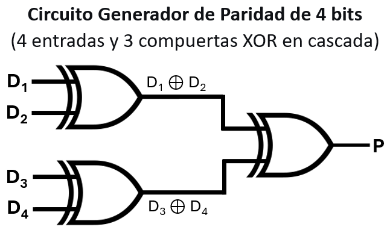
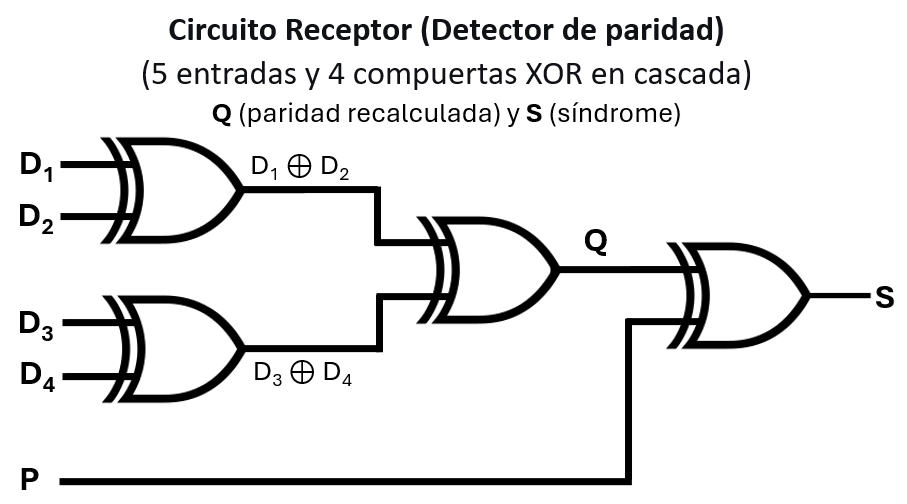
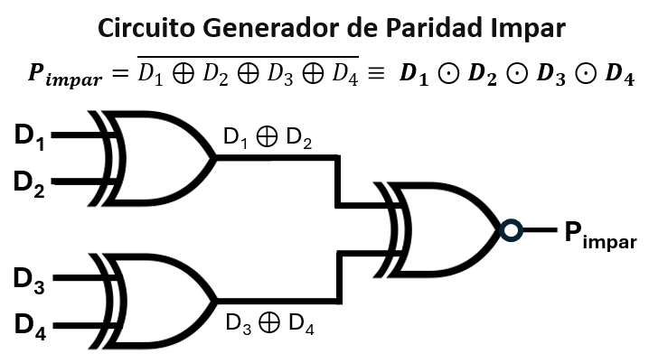

Unidad 4: Teoría de Códigos - Lección 26
¡Bienvenido a la Unidad 4: Teoría de Códigos!
Hasta ahora, nuestros datos viajaban seguros a través de los cortos cables de nuestra protoboard. Pero en el mundo real, cuando enviamos datos por cables submarinos de kilómetros de largo o por el aire a través del Wi-Fi, existe un enemigo implacable: el Ruido Electromagnético.
Un rayo lejano, el motor de una nevera o la radiación solar pueden alterar el voltaje de una señal en tránsito, cambiando accidentalmente un 0 por un 1. Si tu banco recibe un 1 en lugar de un 0, podrías perder millones. ¿Cómo nos protegemos? Hoy aprenderemos a darle a la información un escudo matemático básico.
Para proteger la información, los ingenieros de telecomunicaciones no usan la suma normal que aprendimos en la Unidad 3. Usan una matemática más rápida llamada Aritmética Módulo 2.
En este sistema, sumamos números pero ignoramos por completo el acarreo (el "llevo 1").
Si sumamos $1 + 1$ ignorando el acarreo, el resultado es simplemente $0$. ¿Te resulta familiar este comportamiento?
¡Exacto! Es la compuerta XOR (7486) que armaste en la lección anterior. Siempre que en esta unidad digamos "SUMAR", en realidad estamos diciendo "Pasa los bits por una compuerta XOR".
Decirle a un adolescente que \(1 + 1 = 0\) va en contra de todo lo que le han enseñado desde preescolar. Tu trabajo como docente no es pedirle que lo memorice ciegamente, sino demostrarle que él lleva usando la aritmética modular toda su vida sin saberlo.
Diles a tus alumnos: "Si son las 10 de la mañana, y pasan 3 horas... ¿Qué hora es?". Ellos responderán: "La 1 de la tarde".
10 + 3 = 1
Pregúntales por qué no dijeron "las 13". Te explicarán que el reloj se reinicia al llegar a 12. ¡Acaban de descubrir la Aritmética Módulo 12!
Diles: "Si hoy es Viernes (día 5), y te digo que nos vemos en 4 días... ¿Qué día será?". Ellos contarán y dirán: "El Martes (día 2)".
5 + 4 = 2
El número 9 no existe en los días de la semana. Al llegar al Domingo (7), la cuenta vuelve a empezar. ¡Aritmética Módulo 7 en acción diaria!
Ahora, el salto lógico es fácil. Diles: "Imaginemos un reloj extraterrestre que solo tiene dos horas: la hora 0 y la hora 1. Si estás en la hora 1, y pasa 1 hora más... ¡el reloj se reinicia y vuelve al 0!"
Una vez que entiendan el "Reloj de 2 Horas", muéstrales la tabla de verdad de la compuerta XOR (7486) que vieron en la Unidad 2. ¡Son exactamente idénticas! Diles: "La compuerta XOR no es solo una regla de 'O esto O aquello'. Es una calculadora física Módulo 2. Por eso los ingenieros en telecomunicaciones la usan para sumar los bits del escudo de paridad".
La idea más antigua para detectar errores es increíblemente simple: el transmisor agrega un bit extra ($P$) al final de nuestros datos para asegurar que la cantidad total de unos (1s) en el mensaje sea siempre un número PAR.
1 0 1 1 (Hay tres "1" $\rightarrow$ Cantidad Impar).1 0 1 1 1 (Ahora hay cuatro "1" $\rightarrow$ Cantidad Par).¿Qué pasa si ataca el ruido? Si en el camino el ruido altera un bit (ej: llega 1 1 1 1 1), el receptor cuenta los "1" y dice: "¡Hay cinco unos! El paquete es impar. Sé que hay un error, rechazaré este mensaje y pediré que lo envíen de nuevo".
El bit de paridad es "ciego": sabe que hay un error, pero no sabe en qué bit está. Por lo tanto, no puede corregirlo.
En la industria, los sistemas que usan paridad simple (como el protocolo TCP/IP básico o los puertos serie USB) implementan un mecanismo llamado ARQ (Automatic Repeat reQuest). Cuando el receptor detecta que la paridad no cuadra, simplemente descarta el paquete completo y le envía un mensaje al transmisor exigiendo que lo vuelva a enviar. Es barato en hardware, pero terrible si el canal (como un cable muy largo) tiene ruido constante, ya que el sistema pasará todo el tiempo pidiendo retransmisiones y la velocidad de internet caerá a cero.
¿Cómo calcula la computadora transmisora este bit $P$ automáticamente en nanosegundos? Sumando todos los bits de datos usando nuestra Aritmética Módulo 2 (XOR).

Fig. 1: El Emisor: Conectando compuertas XOR en cascada creamos el generador de paridad. Si entra un número impar de unos, la salida (P) será 1 para compensar.
El emisor agregó el bit $P$ para que el número total de unos sea par. Cuando el paquete llega al receptor, este no confía en el bit $P$ ni en los datos. El receptor debe hacer su propio cálculo para verificar si el mensaje sigue siendo válido.
El receptor recibe 5 bits: los 4 datos originales ($D_1, D_2, D_3, D_4$) más el bit de paridad $P$ que viajó con ellos. Para saber si hubo error, el receptor vuelve a calcular la paridad de los datos recibidos usando exactamente el mismo circuito XOR del transmisor, y luego compara ese nuevo resultado con el bit $P$ recibido.

Fig. 2: Esquema del detector de paridad. Los datos \(D_1 \dots D_4\) se procesan por el mismo árbol XOR (salida Q). Luego Q se compara con el bit de paridad recibido P mediante una cuarta XOR. La salida S es 0 si no hay error detectable (o error par), y 1 si hay un error (número impar de bits alterados).
Matemáticamente, el receptor calcula el Síndrome ($S$):
Si $S = 0$, el número total de unos en el paquete recibido es par → No se detectó error.
Si $S = 1$, el número total de unos es impar → ¡Se detectó un error! (al menos un bit cambió).
📊 Tabla de diagnóstico del detector (Síndrome):
| Paridad recalculada $(D_1 \oplus D_2 \oplus D_3 \oplus D_4)$ |
Bit $P$ recibido | Síndrome ($S$) | Significado |
|---|---|---|---|
| 0 (par) | 0 | 0 | ✅ Sin error detectable (o error doble) |
| 0 (par) | 1 | 1 | ❌ Error detectado (bit alterado) |
| 1 (impar) | 0 | 1 | ❌ Error detectado (bit alterado) |
| 1 (impar) | 1 | 0 | ✅ Sin error detectable (o error doble) |
En esta lección hemos usado paridad par (el total de unos en el paquete debe ser par). Sin embargo, algunos sistemas prefieren usar paridad impar (el total de unos debe ser impar).
🛠️ El Cambio en el Hardware:
Si el protocolo exige paridad impar, el generador y el detector se modifican ligeramente. En lugar de usar una XOR en la etapa final de cada circuito, se emplea una compuerta XNOR (74266), la cual invierte el resultado. En el caso del generador de paridad impar, esto aplica una única negación global al resultado, asegurando que la salida sea 1 cuando entra un número par de unos. Matemáticamente, la paridad impar se define como \(P_{impar} = \overline{D_1 \oplus D_2 \oplus D_3 \oplus D_4}\).
¿Te resulta familiar esa línea encima de la suma XOR? ¡Exacto! La negación de una XOR es la compuerta XNOR (74266) que conocimos en la Lección 18.

💡 Dato histórico: Los primeros sistemas de comunicación por módem usaban paridad impar porque facilitaba la detección de la pérdida total de la señal (una línea muerta en 0 constante se consideraba error al instante, porque un paquete de puros ceros no cumple la paridad impar). Hoy en día, la mayoría de los protocolos permiten configurar ambos modos por software.
La paridad simple es vulnerable cuando el ruido es tan fuerte que altera dos bits al mismo tiempo. Veamos un ejemplo matemático concreto:
1 0 1 1 1 (cuatro unos en total).1 1 1 0 1.Como acabamos de demostrar matemáticamente, la paridad simple solo detecta errores cuando el número de bits alterados es impar (1, 3, 5 bits).
Si el ruido cambia dos bits (un error par), la cantidad de unos se compensa a sí misma y el sistema falla silenciosamente aceptando un archivo corrupto.
Para sobrevivir en el espacio exterior o en servidores de alta disponibilidad, necesitamos abandonar la paridad simple y equiparnos con "armadura pesada": Matrices y Códigos Lineales. ¡Eso veremos en la próxima lección!
¿Cómo explicar la "Detección de Errores" a niños de primaria o secundaria sin usar una sola fórmula matemática? ¡Con un truco de magia mental!
¡Estás enseñando la esencia del algoritmo de Hamming jugando a ser mago!
Dos docentes exploran el salto cognitivo de enseñar a sumar bits a protegerlos. Analizan la elegancia de la Aritmética Módulo 2 y desglosan paso a paso cómo ejecutar en el aula "El Truco de Magia de la Paridad" bidimensional para que los estudiantes entiendan intuitivamente cómo las matemáticas pueden encontrar un error invisible en un mar de datos.
Usa esta guía para pedirle a la Inteligencia Artificial que te ayude a crear dinámicas de aula sobre detección de errores.
"Comprendí que el Bit de Paridad simple permite detectar un error sumando los bits con compuertas XOR, pero fracasa por completo si el ruido altera dos bits al mismo tiempo. Quiero saber: ¿Podrías diseñarme un juego de roles (role-play) de 10 minutos para realizar en el aula, donde los alumnos actúen como 'Emisor', 'Canal ruidoso' y 'Receptor', para que ellos mismos descubran por qué la paridad falla cuando hay errores dobles? Explícame la dinámica como si fuera a enseñárselo a estudiantes de grado 9°. Incluye un error común de instrucción que debo evitar para que el juego no fracase."
Responde en tu cuaderno físico (o aquí) las siguientes reflexiones:
Ya sabemos cómo detectar si un rayo de interferencia electromagnética cambió uno de nuestros valiosos bits. Pero, ¿y si queremos proteger satélites, discos duros o naves espaciales donde retransmitir un mensaje toma 40 minutos?
La paridad simple no basta. Detectar un error es útil, pero ser capaz de arreglarlo sin pedir ayuda es el verdadero santo grial de la comunicación digital. Necesitamos "armadura pesada".
En la próxima lección (Códigos de Bloque), aprenderemos cómo los ingenieros empaquetan y estructuran matemáticamente los mensajes para no solo detectar que hay un error, sino tener la inteligencia para curarse a sí mismos.